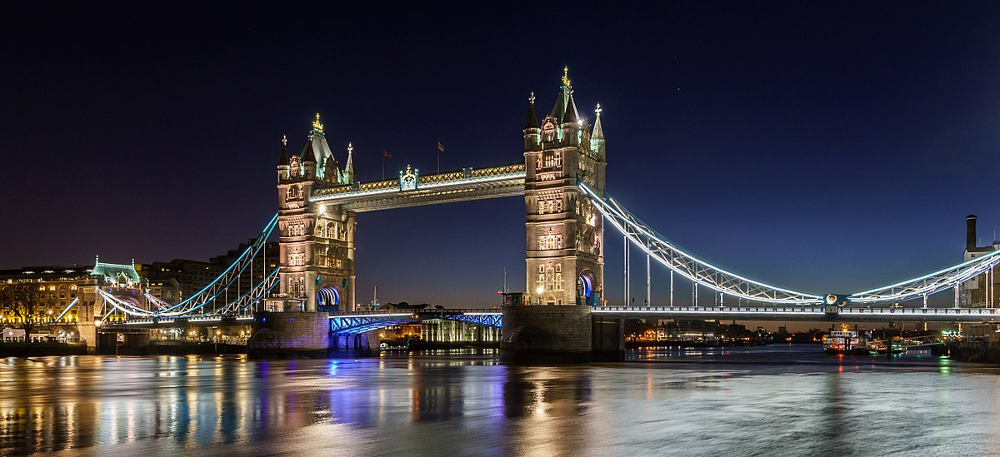

Tower-bridge
The Tower Bridge (in French: “Pont de la Tour”) is a British tilting bridge located in London and allowing motorized vehicles to pass the Thames. It belongs to the class of suspension bridges and is made of granite for its facade, steel for its structure and concrete for its foundations. It is located between the boroughs of Southwark and Tower Hamlets, near the Tower of London from which it takes its name. It is one of four bridges managed by the Lord Mayor's services. Tower Bridge is located in the Pool of London, marking the boundary between the Upper Pool upstream and the Lower Pool downstream. At the time of its construction, the Tower Bridge was the largest (246 m long and 65 m high) and most sophisticated tilting bridges ever built. The bridge is famous throughout the world thanks to its very particular architecture, in neo-Gothic style. It is made up of two large towers, a rigid suspension, an apron opening when the tallest ships pass by and, at the top, two parallel pedestrian walkways. The machinery of the opening bridge has been accessible to the public since 1982 in the form of a museum presenting the operation of the hydraulic mechanism which has allowed the tilting bridge to move since 1894 (date of the bridge's construction by Sir John Wolfe-Barry and Horace Jones).
The British Museum

The British Museum (in French "British Museum", a name commonly used until the 20th century, but which has become rare), is a museum of history and human culture, located in the Bloomsbury district of London, in the United Kingdom. United. Its collections, made up of more than seven million objects, are among the largest in the world and come from all continents. They illustrate human history from its beginnings to today. The museum was founded in 1753 and opened to the public in 1759. Its current status as a non-departmental public body allows it to be funded by the Department of Culture, Media and Sport. The British Museum has six million visitors a year and is the busiest tourist site in Great Britain. As with most museums and art galleries in the UK, entry is free, with the exception of some temporary exhibitions; donations are encouraged. The British Museum was created in 1753, notably from the collections of the physician and scientist Sir Hans Sloane. The museum was opened to the public on 15 January 1759 at Montagu House in Bloomsbury, the same location as today; it then contained some 80,000 objects. The collections were enriched in particular with the contributions of Captain Cook and William Hamilton (British archaeologist and diplomat). Napoleon's defeat in Egypt (Egyptian Campaign) led to the acquisition of Egyptian pieces of art, including the Rosetta Stone. Then at the beginning of the 19th century, Lord Elgin, ambassador to Constantinople, brought sculptures from the Greek world to the museum. In 1865, a new building was built on Great Russell Street in the Tottenham Court area to replace the old one (Montagu House), which had become too small and was destroyed. The building has a large reading room in which Karl Marx and many famous writers, philosophers and scientists worked, for example Charles Dickens. The writer Angus Wilson spent part of his career in this room, where he served as Deputy Superintendent (he resigned in 1955 to devote himself to writing). The museum itself then had the same appearance as it does today. The natural history collections were moved to a new museum (London Natural History Museum) in South Kensington in 1880. Until 1997, the British Museum had the distinction of housing in the same building a museum and a national library (the British Library has since been located near St. Pancras Station). Finally in December 2000, the “Grande Cour2” was added to the museum. Of the many temporary exhibitions hosted by the British Museum throughout its history, the most significant was "The First Emperor: China's Terracotta Army", which was held from September 13, 2007 to April 2008 and brought together 120 objects and 12 Terracotta soldiers from the mausoleum of Qin Shi Huang, the first emperor of China. This exhibition made 2008 the year the British Museum received the most visitors in its history and resulted in the museum being the most visited cultural attraction in the UK in 2007 and 2008. Last time that an exhibition had brought so many visitors to the museum was that of 1972 dedicated to the pharaoh Tutankhamun. According to the daily The Washington Post, the 400,000 tickets put on sale in advance sold out so quickly that the museum had to extend its opening hours until midnight to cope with the crowds.
Buckingham Palace

Buckingham Palace is the official residence of British sovereigns. Located in the City of Westminster in London, the palace is both the place where several events relating to the royal family take place, the place of reception during visits by many heads of state, as well as an attraction leading tourist destination. It is the focal point of the British people in times of joy, crisis and sorrow. Buckingham Palace, or simply “the Palace”, refers to the source of press emanating from royal offices. Built for John Sheffield, Duke of Buckingham and Normanby, in 1703, it is the residence of the British monarchy. It was enlarged during the 19th century by John Nash for King George IV. In the Middle Ages the site of Buckingham Palace formed part of the manor of Ebury. It has had several royal occupants since Edward the Confessor and has been the subject of much speculation about its ownership: a loophole in the lease to Charles I of England allowed the land to return to royal ownership in the 18th century. The precursors to Buckingham Palace were private residences called Blake House, Goring House, and then Arlington House. First known as Buckingham House, the building forming the heart of today's palace was then a grand mansion built in 1703 for the Duke of Buckingham John Sheffield and acquired by King George III in 1762 for make his private residence. It was expanded over the next 75 years, primarily by architects John Nash and Edward Blore, who added three wings around a square courtyard. The palace eventually became the official residence of the British monarchy upon Queen Victoria's accession to the throne in 1837. The last significant structural additions date from the late 20th and early 20th centuries: the imposing wing East facing the Mall was added, and the former official entrance, Marble Arch, was moved to near Speakers' Corner in Hyde Park, where it still stands. The east façade was rebuilt in 1913 with blocks of Portland limestone, in the background of the Victoria Memorial, creating the 'public façade' of Buckingham, with the famous balcony at its centre. The 20th century interior decorations, many of which are still visible today, show the extensive use of brightly colored stucco, blue and pink lapis lazuli, on the advice of Sir Charles Long. King Edward VII led a partial redecoration in Belle Époque cream and gold tones. Many of the small reception rooms are furnished in a 'Chinese' style fashionable in the early 19th century, with elements taken from Brighton Pavilion and Carlton House, after the death of King George IV. The Palace Gardens are the largest private gardens in London, originally designed by Capability Brown, then remodeled by William Townsend Aiton (of the Royal Botanic Gardens, Kew) and John Nash. The artificial lake was completed in 1828 and its water comes from the Serpentine, a lake in Hyde Park. The State Apartments form the busy heart of the palace and were regularly used by Queen Elizabeth II and members of the royal family for official events. Buckingham Palace is one of the most famous buildings in the world: more than 50,000 people are welcomed to the palace each year as guests at banquets, lunches, dinners, receptions and garden parties.